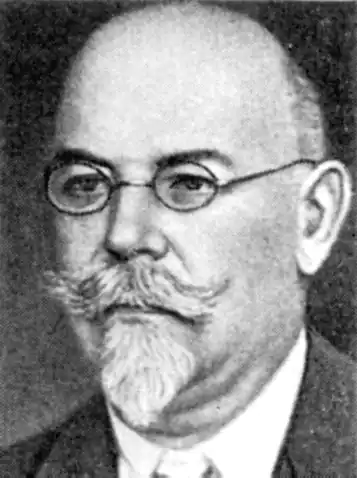
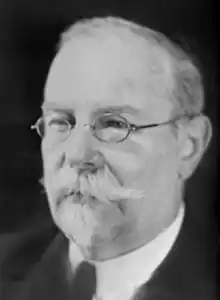

Перетц Володимир Миколайович
(1870-1935)
літературознавець Народився 1870 р. у Петербурзі. Після закінчення Петербурзького університету (1893 р.) був залишений на посаді приват-доцента на кафедрі російської мови і словесності. У 1900 р. захистив дисертацію на ступінь магістра, 1902 р. — доктора російської словесності. У 1903—1914 рр. — професор Київського університету, голова філологічної секції Українського наукового товариства, редактор "Записок" УНТ. З 1914 р. працював у Петербурзі в Академії наук. Дійсний член Наукового товариства ім. Шевченка. Учасник процесу заснування Української Академії наук, голова академічної Комісії давнього українського письменства, організатор і голова Товариства прихильників української історії, письменства і мови (Ленінград). Організатор семінарію російської та української філології в Києві та Ленінграді, з якого вийшло багато дослідників і викладачів історії української літератури. В.М.Перетц — дослідник стародавньої, переважно віршованої, української літератури, української народної пісні, апокрифічної літератури, історії українського, російського, польського театрів, взаємозв’язків української і російської літератур XVI—XVII ст. Йому належить понад 300 праць. Багатством коментарів відзначаються праці про "Слово о полку Ігоревім", "Дослідження і матеріали з історії старовинної української літератури XV—XVIII ст." та ін. Автор багатьох праць з джерелознавства, історіографії, бібліографії, текстології, палеографії. Значущим є вклад В.М.Перетца у становлення українознавства в широкому розумінні. Він — один з найактивніших і найрезультативніших діячів, які сприяли формуванню національної спільноти українських учених, становленню її перших професійних об’єднань. Інтерес до вивчення давнього українського письменства виник у В.М.Перетца ще під час занять у філологічному гуртку Публічної бібліотеки у Петербурзі. 1903 р. вийшла в світ його розвідка "Очерки старинной малорусской поэзии". Він зосереджується переважно на питаннях давньої української поезії, фольклору, відтак прагне переїхати в Україну, щоб працювати над рукописами й стародруками в місцевих книго— та архівосховищах. 1903 р. його обирають професором Київського університету. Він читає в університеті курси з історії літератури, церковнослов’янську мову та історію давньоруської мови з діалектологією, слов’янську палеографію, історію українського письменства. Щоб навернути студентів до наукової роботи, восени 1904 р. В.М.Перетц організував гурток для глибшого вивчення різноманітних питань філології. З жовтня 1907 р. гурток набув офіційної форми й дістав назву "Семінарій російської філології". Його відвідували не тільки студенти, а й випускники університету, що готувалися до здобуття професорського звання. Починалися заняття з вивчення загальних питань історії та теорії літератури, потім члени семінарію оволодівали прийомами наукового аналізу й синтезу, знайомилися з науково-критичними виданнями пам’яток літератури й мови, опрацьовували теми для самостійного дослідження. В.М.Перетц разом з учнями відвідував бібліотеки й архівосховища, підказував, як слід працювати зі списками й рукописами, як вести пошук маловідомих матеріалів. Завершені роботи рецензувалися двома-трьома опонентами й доповідались на зборах семінарію. Учасники семінарію студіювали питання історіографії літератури, археографії, палеографії, текстології, історії літератури Київської Русі, нової й новітньої літератури, методології та історії науки, поетики й теорії літератури, народної словесності, міфології, церковного й народного мистецтва. Широкий спектр проблем, прагнення дотримуватись у філології "принципів точних і природничих наук" надавало особливої вагомості підготовці в "школі В.М.Перетца". Володимир Миколайович організовував виїзди учасників семінарію до Петербурга, Вільна, Полтави, Катеринослава, Житомира, Москви. Вивчали найдревніші і найважливіші пам’ятки літератури, які зберігалися в місцевих музеях, ар-хівах, бібліотеках, перевіряли покажчики описів і друкованих каталогів, описували рукописи, стародруки, збирали дані для наукових праць, виступали з доповідями в наукових товариствах. Завдяки діяльності семінарію в Києві було сформовано представницьку наукову школу. Учні В.М.Перетца багато зробили у науці в наступні роки. Працюючи в Києві, В.М.Перетц продовжив студіювання віршованої літератури. Його праця "Очерки по истории поэтического стиля в России" (1905—1907 рр.) — найцінніша у спадщині вченого. Він приділяв увагу шляхам формування стилю української любовної лірики, зацікавився історією театру — російського, українського, польського і написав з цього приводу ряд грунтовних праць. 1907 р. В.М.Перетц побував у Польщі, де вивчав твори польських поетів епохи Відродження і стилю бароко. Це дало йому змогу з’ясувати витоки російського й українського поетичного стилю. З організацією 1907 р. Українського наукового товариства В.М.Перетц запропонував програму роботи філологічної секції, яку він очолив. Планувалося залучення молоді до досліджень у галузі історії української літератури, видання хрестоматії української літератури, починаючи з найдавніших часів, укладання каталогів пам’яток української мови і літератури XVI—XVIII ст. із коментарями, видання повної бібліографії української літератури, публікація збірників драматичних творів і пісенних текстів, збирання матеріалів з української діалектології. Учений заклав важливі передумови для успішної роботи філологічної секції УНТ: залучив до співпраці відомих філологів, накреслив програму діяльності секції, організував всебічну розробку питань української філології — уніфікації граматики, складання історичних, термінологічних і тлумачних словників, дослідження генези української мови. Філологічна секція УНТ, коли нею керував В.М.Перетц, була однією з найефективніших у Товаристві. З від’їздом В.М.Перетца 1914 р. до Петербурга у зв’язку з обранням дійсним членом Академії наук його зв’язки з українськими вченими не припинилися, тривало студіювання ним українознавчої проблематики. У 1919 р. його обрано академіком Української Академії наук. Він багато зробив для полiпшення роботи у Комісії давнього українського письменства. 1926 р. видав у Києві свою визначну працю ""Слово о полку Ігоревім". Пам’ятка феодальної України-Руси XII віку", в якій склав найповніший добір паралелей до фразеології і лексики "Слова" з пам’яток перекладної та оригінальної літератури XI—XII ст. і творів народної словесності. Хвиля боротьби з "українським націоналізмом", що піднялася на початку 1930-х років, зачепила й В.М.Перетца. Він змушений був відійти від головування в Комісії давнього українського письменства, обірвав зв’язки з УАН. Але й у Ленінграді зазнає переслідувань. Він не зрадив своїх наукових принципів, тому став об’єктом постійного цькування. Він твердив: "Для історика літератури пам’ятки літературні є важливими зовсім не тому, що відбивають класові інтереси й симпатії, а тому, що самі вони в собі містять своєрідну історію". Непокірного академіка було заслано 1934 р. до Саратова. Здоров’я його підупало, він уже не викладав, займався тільки дослідженням рукописів у бібліотеці Саратовського університету. Восени 1935 р. В.М.Перетц помер. Похований у Саратові.